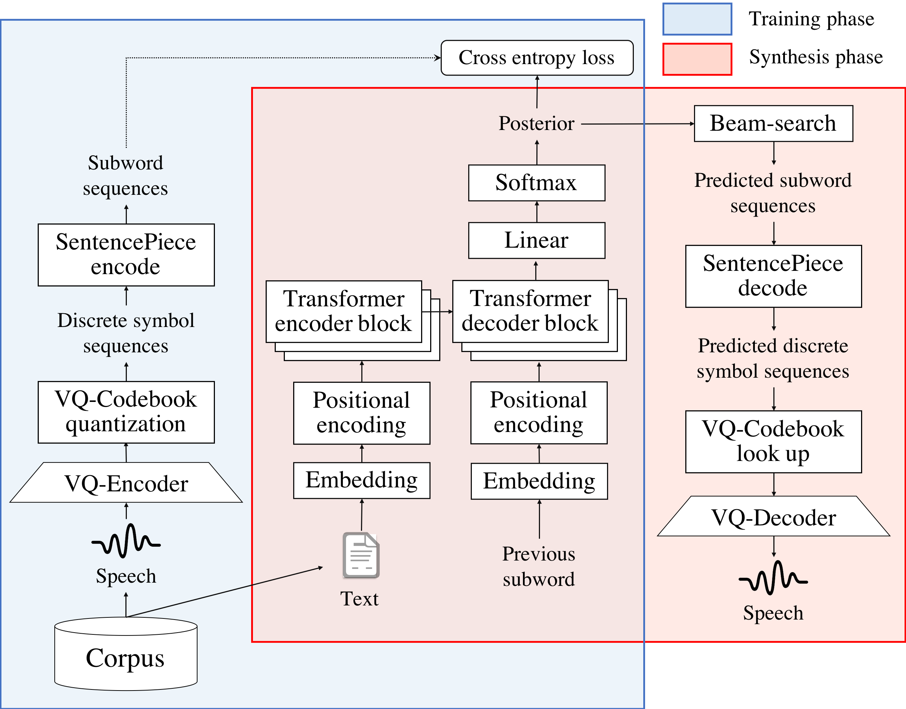

DiscreTalk: Text-to-Speech as a Machine Translation Problem
Abstract

This paper proposes a new end-to-end text-to-speech (E2E-TTS) framework based on neural machine translation (NMT). The proposed model consists of two components, a non-autoregressive vector quantized variational autoencoder (VQ-VAE) model and an autoregressive Transformer-NMT model. The VQ-VAE model learns a mapping function from a speech waveform into a sequence of discrete symbols, and then the Transformer-NMT model is trained to estimate the discrete symbol sequence from a given input text. Since the VQ-VAE model can learn such a mapping in a fully-data-driven manner, we do not need to consider hyperparameters of the feature extraction required in the conventional E2E-TTS models. Thanks to the use of discrete symbols, we can use various techniques developed in NMT and automatic speech recognition (ASR) such as beam search, subwords, and fusions with a language model. Furthermore, we can avoid an over smoothing problem of predicted features, which is one of the common issues in TTS. The experimental evaluation with the JSUT corpus shows that the proposed method outperforms the conventional Transformer-TTS model with a non-autoregressive neural vocoder in naturalness, achieving the performance comparable to the reconstruction of the VQ-VAE model.
This paper is submitted to Interspeech 2020.
Audio samples (Japanese)
- Target: Target speech downsampled to 24k Hz.
- Baseline: Baseline system (Transformer-TTS + Parallel WaveGAN).
- Reconst (DSF128): Reconstructed speech by the proposed VQ-VAE with downsampling factor = 128.
- Reconst (DSF256): Reconstructed speech by the proposed VQ-VAE with downsampling factor = 256.
- Propoed (DSF128, Raw): The proposed method with downsampling factor = 128 and raw discrete symbols as the target of the NMT model.
- Propoed (DSF256, Raw): The proposed method with downsampling factor = 256 and raw discrete symbols as the target of the NMT model.
- Propoed (DSF128, SW256): The proposed method with downsampling factor = 128 and subword units (#subword units = 256) as the target of the NMT model.
- Propoed (DSF256, SW256): The proposed method with downsampling factor = 256 and subword units (#subword units = 256) as the target of the NMT model.
軽妙洒脱なナレーションから、情緒感溢れる語りまで、幅広い表現力を持つ。
| Target | Baseline |
| Reconst (DSF256) | Reconst (DSF128) |
| Propoed (DSF256, Raw) | Propoed (DSF128, Raw) |
| Propoed (DSF256, SW256) | Propoed (DSF128, SW256) |
当時、あやしいワールドに常駐していた擬古猫が、空白にて発表。
| Target | Baseline |
| Reconst (DSF256) | Reconst (DSF128) |
| Propoed (DSF256, Raw) | Propoed (DSF128, Raw) |
| Propoed (DSF256, SW256) | Propoed (DSF128, SW256) |
裕福なニューヨーカー達は、グレーヴセンド、競馬場や、シープシェッドベイ、競馬場などに集い、海沿いの高級レストランや、ホテルを利用した。
| Target | Baseline |
| Reconst (DSF256) | Reconst (DSF128) |
| Propoed (DSF256, Raw) | Propoed (DSF128, Raw) |
| Propoed (DSF256, SW256) | Propoed (DSF128, SW256) |
楽曲のセンターポジションは、エーケービーフォーティーエイトの、高橋みなみが務めた。
| Target | Baseline |
| Reconst (DSF256) | Reconst (DSF128) |
| Propoed (DSF256, Raw) | Propoed (DSF128, Raw) |
| Propoed (DSF256, SW256) | Propoed (DSF128, SW256) |
若き日の反逆ゆえに、宇宙の中央を追放されて、惑星、地球にやってきた主人公、ベルゼバブが、宇宙船カルナークのなかで、孫に語る壮大な物語。
| Target | Baseline |
| Reconst (DSF256) | Reconst (DSF128) |
| Propoed (DSF256, Raw) | Propoed (DSF128, Raw) |
| Propoed (DSF256, SW256) | Propoed (DSF128, SW256) |
Author
Tomoki Hayashi (Human Dataware Lab. Co., Ltd. & Nagoya University)
e-mail: hayashi.tomoki@g.sp.m.is.nagoya-u.ac.jp